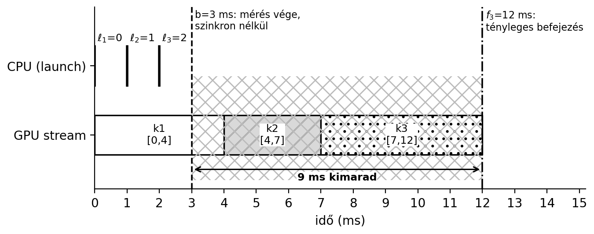

A 24.1. Tanulási görbe és hibadiagnózis
tanulási görbéje felhasználja az epoch-időt, de nem mondja meg, hogyan
mértük. Ha ugyanazt a hálót kétszer futtatjuk, a Python
time modulja más-más értéket adhat, és GPU-n a különbség
nem is feltétlenül a számítás ideje. Ebben az egységben a mérés fogalmát
pontosítjuk: mit jelent a „futásidő”, miért kell a gyorsítóval
szinkronizálni, és hogyan bontsuk a teljes képzési pipeline költségét
adatbetöltésre, transzferre, számításra és memóriára.
Előismeret a 24.1. Tanulási görbe és hibadiagnózis hibadiagnózisa, a 12.2. Checkpoint és folytathatóság checkpoint-protokoll és a 20.2. Finomhangolás és tanulási ráta paraméterfrissítési lépése. A labor CPU-n fut; GPU-mérést nem állítunk elvégzettnek, csak jelölt tervet adunk.
Induló kérdés: egy batch feldolgozása ötször mérve 2,1; 2,0; 2,4; 2,0; 9,3 ms-ot mutat. Miért hibás azt állítani, hogy a lépés „2,0 ms”, és miért hibás a 9,3-at egyszerűen kidobni?
Definíció 1 (mért időintervallum). Legyen egy monoton óra; a fizikai pillanathoz tartozó időbélyeg. Ha a mérés kezdetét , végét jelöli, a mért futásidő
Az intervallum akkor érvényes az
munkára, ha
minden releváns eseménye
-be
esik. Releváns esemény alatt a mért mennyiséget meghatározó eseményeket
értjük: a munka CPU-oldali elküldését és az eszközoldali befejezését. A
Python time.perf_counter() monoton óra; a
time.time() nem az, mert a rendszeróra visszafelé
állítható, így
akár negatív is lehet. A CPU process time ezzel szemben csak a
processz CPU-idő-magját méri, és nem tartalmazza a DataLoader
várakozását vagy a GPU-végrehajtást.
A definícióban a „releváns esemény” a kulcs. Amikor a mérés csupán a CPU-oldali műveletsor végét rögzíti, a gyorsítón esetleg még futó munkát nem tartalmazza.
A GPU munkát aszinkron módon indítjuk: a CPU kernelindítást küld a streambe, majd azonnal továbblép. A mérés helyességéről szóló állítást egy egyszerű, de pontos modellben bizonyítjuk.
Lemma 1 (záró szinkronizáció szükségessége). Legyen kernel egyetlen, FIFO streamen. Tegyük fel, hogy az -edik kernel indítási időpontja a CPU-órán , tiszta eszközoldali futásideje , és a befejezési időpont a stream-csúcsban
Itt a stream utolsó, a mérés előtti befejezési időpontja; a legegyszerűbb esetben , azaz a stream a mérés kezdetekor üres. A modell feltételezi, hogy a kernelek egyetlen FIFO streamen, sorban futnak, nincs párhuzamos végrehajtás, és a CPU-oldali indítási overhead az értékekbe van beépítve; több stream vagy párhuzamos kernelek esetén a lemma csak alsó korlátot ad.
Ha a CPU-oldali mérési intervallum záró időpontjára , akkor az kernelsorozat teljes eszközmunkájából legalább idő a mérés lezárása után következik be; így nem érvényes mértéke futásidejének.
Bizonyítás. Az -edik kernel befejezési időpontja . A feltétel azt mondja, hogy -kor a stream még nem érte el az utolsó kernel végét. Mivel a stream FIFO, az utolsó kernel munkájából rész után esedékes. A mért intervallum tehát nem tartalmazza teljes eseményét, ami sérti az érvényesség definícióját.
A szinkronizáció nem teszi a mérést „pontossá” minden értelemben: a
GPU óráját nem a CPU perf_counter adja, a záró szinkron
hívás maga is időt fogyaszt, és a CPU-indítás overheadje is beleszámít a
mért intervallumba. A lemma csak a szükségességet rögzíti:
szinkronizálás nélkül a mérés nem állíthatja a teljes munka idejét.
Tekintsünk három kernelt:
| (ms) | (ms) | (ms) | |
|---|---|---|---|
| 1 | 0 | 4 | |
| 2 | 1 | 3 | |
| 3 | 2 | 5 |

A teljes eszközmunka befejezése
ms. Ha a CPU a
ms intervallumot méri szinkronizálás nélkül, a mért érték
ms. Ekkor a harmadik kernel még el sem indult (a kezdete
ms, és
ms-ig fut, azaz
–
ms között); a mérés lezárásától a teljes eszközmunka befejezéséig még
ms falióra-idő van hátra. Ez a hátralévő idő nem a harmadik kernel
futási ideje: tartalmazza az előző kernelek hátralévő részét és a
várakozást is. A szinkronizált mérés a harmadik kernel végét megvárva
legalább
ms-t mutat, plusz a szinkronizációs hívás overheadje. Ez a példa a
gyakori tévedés ellenpéldája is: a CPU-oldali t1-t0 nem a
kernel teljes munkája.
A fenti öt mérésben (2,1; 2,0; 2,4; 2,0; 9,3) a medián 2,1 ms, az átlag 3,56 ms; a különbséget a 9,3 ms-os kiugró érték okozza. A minimum kiválasztása félrevezető, mert a CPU-ütemező, a háttérfolyamat vagy a first-touch memóriaallokáció (az első íráskor történő fizikai lapkiosztás) miatt a minimális érték nem a munkához tartozó stabil idő. A 9,3 ms sem dobható el indoklás nélkül: lehet a mérés valós eloszlásának felső széle. A robusztus közép a medián a teljes nyers listából, mellette a min–max és a kvartilisek (az interkvartilis terjedelem, IQR = Q3 − Q1). A „warmup” célja a lazy inicializáció (az első hívásnál létrejövő modulok és pufferek) eltávolítása: az első hívás gyakran tartalmazza a memóriaallokációt, a kernelmodul betöltését vagy a könyvtári algoritmusválasztást, amely a későbbi lépésekből hiányzik. Warmup nélkül az első mért lépés a többitől független, egyszeri költséget tartalmaz. A nyitó kérdésre a válasz tehát: a jelentett érték a medián (2,1 ms), a 9,3 ms-ot pedig nem kidobni, hanem a nyers listában és a szórásképben megtartani kell.
Előfeltételek. Python 3.12, a lab/
csomag telepítve (cd lab && uv sync), NumPy 2.3.5
és torch 2.14.1 (CPU). A lock fájl (lab/uv.lock) ezeket a
verziókat telepíti; a fejezetben közölt mért kimenetek a könyv ellenőrző
környezetéből származnak (Python 3.12.3, NumPy 2.5.4, pandas 3.1.0,
torch 2.15.0+cpu). A két környezet a laborokban ugyanazt a kimenetet
adta; eltérés esetén az utolsó jegyek különbözhetnek (loss kb.
,
accuracy egy megfigyelési egységnyi). Szükséges fájlok:
data/images.npy, data/labels.npy,
data/metadata.csv; hiányzó adat esetén
uv run python generate_data.py --output data. A futtatás a
szakaszban megadott measure_pipeline.py szkripttel
történik; várható futásidő CPU-n néhány másodperc, a tényleges időt a
futás naplózza.
A következő kód a lab/ könyvtárban futtatható; az adat a
függelék A. A GlyphLab adatkészlet szakaszában
leírt GlyphLab. Az adatfájlok előállítását, a metadata.csv
split oszlopát és a 240/60/60-as felosztást ugyanez a
szakasz rögzíti; a regenerálás
uv run python generate_data.py --output data. A kódot a
könyv környezetében lefuttattuk (Python 3.12.3, torch 2.15.0+cpu, CPU, 1
szál, seed 20261020); a hallgató a saját
measure_report.json-ját állítja elő, és az az empirikus
bizonyíték.
# munkakönyvtár: lab/
# Futtatás: python measure_pipeline.py
import csv
import json
import statistics
import time
import numpy as np
import torch
SEED = 20261020
WARMUP = 3
REPEAT = 10
BATCH_SIZE = 32
torch.set_num_threads(1)
def load_glyphlab_train():
images = np.load("data/images.npy") # (360,1,24,24) float32
labels = np.load("data/labels.npy") # (360,) int64
idx = []
with open("data/metadata.csv", newline="", encoding="utf-8") as f:
rows = list(csv.DictReader(f))
assert list(rows[0]) == ["index", "scene_id", "view_id", "label", "split",
"xmin", "ymin", "xmax", "ymax"], list(rows[0])
assert len(rows) == len(images) == len(labels) == 360, (len(rows), images.shape)
assert [int(r["index"]) for r in rows] == list(range(len(rows)))
for row in rows:
if row["split"] == "train":
idx.append(int(row["index"]))
X = torch.tensor(images[idx], dtype=torch.float32)
y = torch.tensor(labels[idx], dtype=torch.long)
return X, y
class SmallCNN(torch.nn.Module):
def __init__(self):
super().__init__()
self.net = torch.nn.Sequential(
torch.nn.Conv2d(1, 8, 3, padding=1),
torch.nn.ReLU(),
torch.nn.MaxPool2d(2),
torch.nn.Conv2d(8, 16, 3, padding=1),
torch.nn.ReLU(),
torch.nn.MaxPool2d(2),
torch.nn.Flatten(),
torch.nn.Linear(16 * 6 * 6, 3),
)
def forward(self, x):
return self.net(x)
def step(x, y, model, loss_fn, opt):
opt.zero_grad(set_to_none=True)
logits = model(x)
loss = loss_fn(logits, y)
loss.backward()
opt.step()
return loss.detach().item()
def summarize(values):
q1, med, q3 = statistics.quantiles(values, n=4, method="inclusive")
return {
"median": med,
"mean": statistics.mean(values),
"min": min(values),
"max": max(values),
"iqr": q3 - q1,
}
def main():
torch.manual_seed(SEED)
device = torch.device("cpu")
X, y = load_glyphlab_train()
ds = torch.utils.data.TensorDataset(X, y)
# A shuffle-permutációt kikapcsoljuk, hogy a data_ms csak a batch
# összeállítását mérje; a permutáció költsége külön mérés tárgya.
loader = torch.utils.data.DataLoader(
ds, batch_size=BATCH_SIZE, shuffle=False, num_workers=0
)
model = SmallCNN().to(device)
loss_fn = torch.nn.CrossEntropyLoss()
opt = torch.optim.SGD(model.parameters(), lr=0.01)
for _ in range(WARMUP):
xb, yb = next(iter(loader))
step(xb.to(device), yb.to(device), model, loss_fn, opt)
data_ms, step_ms, total_ms = [], [], []
it = iter(loader)
for _ in range(REPEAT):
t0 = time.perf_counter()
try:
xb, yb = next(it)
except StopIteration: # 240 kép / 32 = 7,5 batch korszakonként
it = iter(loader)
xb, yb = next(it)
t1 = time.perf_counter()
xb, yb = xb.to(device), yb.to(device)
_ = step(xb, yb, model, loss_fn, opt)
t2 = time.perf_counter()
data_ms.append(1e3 * (t1 - t0))
step_ms.append(1e3 * (t2 - t1))
total_ms.append(1e3 * (t2 - t0))
for name, values in (("data", data_ms), ("step", step_ms), ("total", total_ms)):
assert len(values) == REPEAT, (name, len(values))
assert all(v >= 0 for v in values), name
report = {
"device": str(device),
"batch_size": BATCH_SIZE,
"warmup": WARMUP,
"repeat": REPEAT,
"shuffle": False,
"data_ms": data_ms,
"step_ms": step_ms,
"total_ms": total_ms,
"summary": {
"data": summarize(data_ms),
"step": summarize(step_ms),
"total": summarize(total_ms),
},
}
with open("measure_report.json", "w", encoding="utf-8") as f:
json.dump(report, f, indent=2)
print(json.dumps(report["summary"], indent=2))
if __name__ == "__main__":
main()A fenti kód egy futásának kimenete (a
measure_report.json summary mezője; a teljes
nyers listák a fájlban vannak):
{
"data": {
"median": 0.12896450061816722,
"mean": 0.16348380013369024,
"min": 0.08434700430370867,
"max": 0.5036180082242936,
"iqr": 0.03101374750258401
},
"step": {
"median": 2.1398530079750344,
"mean": 2.1185625984799117,
"min": 1.9724599842447788,
"max": 2.3319699976127595,
"iqr": 0.20125976152485237
},
"total": {
"median": 2.279597509186715,
"mean": 2.282046398613602,
"min": 2.089400979457423,
"max": 2.7110610099043697,
"iqr": 0.2485590084688738
}
}A labor értelmezése. A data_ms a batch
előállításának költsége (a DataLoader batch-összeállítása; a
shuffle=False miatt permutáció nélkül), a
step_ms a forward, backward és optimizer-lépés költsége a
.to(device) hívásokkal együtt, a total_ms
pedig a teljes mért ciklus. A két rész pontosan felosztja a mért
intervallumot:
(a kerekítéstől eltekintve), a mérési overhead az egyes részeken belül
van. CPU-n a .to(device) azonos eszközre mutató hívásként
nem másol adatot, ezért a step_ms itt nem tartalmaz
HtoD-transzfert (host-to-device másolás: a CPU memóriájából a GPU
memóriájába történő adatmozgatás); a transzfer csak a GPU-tervben
jelenik meg. A mérést a szkript maga is ellenőrzi:
assert-tel megköveteli, hogy minden lista hossza
REPEAT legyen, és minden elem nemnegatív; a medián a nyers
listából számol. Ökölszabály: ha a data_ms mediánja a
total_ms mediánjának legalább 20–30%-a, a betöltés érdemi
szűk keresztmetszet lehet; itt ez az arány körülbelül 5,7%, tehát nem
az. Ez a következtetés csak erre a könyvtárra, splitre és gépre
érvényes.
A num_workers=0 azt jelenti, hogy a betöltés a fő
folyamatban történik; a munkások indításának overheadje ebben a
változatban nem jelenik meg. A shuffle=False választás
tudatos: a korszakhatáron újrainduló iterátor első next()
hívása shuffle=True esetén a permutáció költségét is a
data_ms-be tenné. A szkriptet WARMUP=3,
REPEAT=10, BATCH_SIZE=32 mellett futtattuk; a
fenti kimenet mediánjai egy futásból: data
ms, step
ms, total
ms. Három egymást követő futásban a mediánok: data
–
ms, step
–
ms, total
–
ms; ekkora szóráson belül egyetlen futás számai nem általánosíthatók. A
nyers data_ms listában egy
ms-os kiugró érték is volt, miközben a medián
ms maradt; ez éppen a medián robusztusságát szemlélteti. A laborban a 3
melegítő lépés azért elég, mert CPU-n a lazy inicializáció és az
allokátor gyorsítótárazása néhány lépés alatt beáll; GPU-n a
CUDA-kontextus és a cuDNN-algoritmuskeresés miatt 10 lépés a célszerű
minimum. A futásidő gépfüggő; a számok a rögzített környezetre (Python
3.12.3, torch 2.15.0+cpu, CPU, 1 szál) érvényesek, és futásról futásra
változnak.
A címben szereplő profiling eszköze a torch.profiler; a
labor változóival (model, xb, yb,
loss_fn, opt) egy lépés profilja így
készíthető:
from torch.profiler import ProfilerActivity, profile
with profile(activities=[ProfilerActivity.CPU]) as prof:
step(xb, yb, model, loss_fn, opt)
print(prof.key_averages().table(sort_by="self_cpu_time_total", row_limit=10))A táblázat műveletenkénti bontást ad; a
self_cpu_time_total oszlop a művelet saját CPU-ideje a
profiler mérése szerint. A profiler saját overheadje miatt a táblázat
ideje nem azonos a step_ms-sel, ezért a profiler a szűk
keresztmetszet megkeresésére való, a jelentett idő mérésére nem.
GPU nélkül is megadható a protokoll, de nem szabad mért eredményt állítani. A terv:
SmallCNN egy 32-es
batch lépése mennyi idő GPU-n, mennyi a HtoD-transzfer, és van-e átfedés
a másolás és a számítás között?torch.cuda.synchronize(); a záró hívás a t1
rögzítése előtt történjen, különben a Lemma 1 hibáját követjük el. A
betöltőt pin_memory=True-val adjuk meg, így a batch már
pinned memóriában áll; a HtoD-másolást külön,
x.to(device, non_blocking=True) hívással mérjük, és a mért
intervallum végét ott is szinkronizáljuk. A pinned memóriába töltés
költsége az adatbetöltés része, nem a transzferé, ezért a mérési ablakot
a betöltés és a másolás között kell elvágni.torch.cuda.reset_peak_memory_stats(), a végén a
max_memory_allocated és a max_memory_reserved
külön rögzítése, azonos mérési ablakban. A két csúcsot külön rögzítjük;
a részleteket lásd a lenti memóriabekezdésben.torch.utils.benchmark [D16] és a
torch.profiler [D17] megfelelő szakaszának elolvasása után
használható keresztellenőrzésre; ezek a források kiinduló dokumentációk,
nem ellenőrzött API-szemantika.A transzfer kiemelése: a tensor.to("cuda") nem
feltétlenül fejeződik be azonnal; szinkron nélkül a CPU-oldali mérés a
másolásnak is csak az indítását látja. A 20.2.
Finomhangolás és tanulási ráta paraméterfrissítési lépése ugyanezen
okból nem mérhető GPU-n a CPU perf_counter puszta
különbségével.
A mért idő mellé a memóriát is naplózni kell, mert a gyorsulás
sokszor allokációval vásárolt. GPU-n az allocated a
ténylegesen lefoglalt, aktív tensor-memória, a reserved a
caching allocator által megtartott keret; mindkettőnek külön csúcsát
kell mérni és jelenteni, mert a reserved a gyorsítótárazás miatt az
allocatednél nagyobb lehet, és a kettő maximumából nem szabad egyetlen
„csúcsot” képezni. A csúcs allocated a paramétereket, a gradienseket, az
aktivációkat és az optimalizáló állapotát is tartalmazza, nem csak a
gradiens és az aktiváció együttes foglalását. CPU-n a
torch.profiler [D17] memory-szekciója vagy a
rendszerfigyelő ad hasonló bontást, de a Python-allocátor és a
NumPy-allocátor külön réteg. A mérési protokoll része, hogy a
memória-csúcs ugyanarra a warmup nélküli, első futásra vonatkozik-e,
vagy a warmup után mérjük; a kettő nem azonos állítás.
A kernelindítás CPU-oldali ideje nem azonos a GPU teljes munkájával. A
t0 = time.perf_counter()
y = model(x.cuda())
t1 = time.perf_counter()kód a CPU-oldali indítások idejét méri: a t1-t0 értéke
lehet 0,3 ms, miközben a kernel 2,1 ms-ig fut a GPU-n (szemléltető
értékek, nem ebben a könyvben mért adatok). A példában
model és x adott, és az x.cuda()
a mért ablakon belül van; a mért érték így a másolás indítását is
tartalmazza, ami tovább nehezíti a kernelidő azonosítását. A Lemma 1
numerikus példája mutatja, hogy a záró szinkronizáció hiánya
alulbecsléshez vezet; a helyes sorrend
torch.cuda.synchronize() a kezdő és a záró időpont előtt
is. Ez nem „rossz implementáció”, hanem az aszinkron végrehajtási modell
következménye: a CPU oldali visszatérés nem a befejezés eseménye.
Az F5 kísérlettervezési feladat kötelező sablonja. A válaszban adja meg a hipotézist; a független és a függő változót; a kontrollt vagy baseline-t; a modellarchitektúrát, az optimalizálót, a tanulási rátát és az epochszámot; a seedek számát és konkrét értékét; a metrikát és a megfigyelési egységet; az előre rögzített, számmal megfogalmazott döntési szabályt és a statisztikai próbát; valamint az erőforráskeretet. Ha a feladat nem tanít modellt, a tanítási recept helyett az adott eljárás kontrollját, döntési szabályát és erőforrását kell kitölteni.
F1 (fogalmi, nehézség 1). Miért nem használható a
time.time() a futásidő mérésére, és mit ad a
perf_counter helyette? Adjon konkrét ellenpéldát, amelyben
a time.time() különbsége negatív.
F2 (levezetési, nehézség 2). A Lemma 1 modelljében legyen négy kernel: ms, ms. Számítsa ki az értékeket, a teljes eszközidőt, és mutassa meg, hogy a CPU-oldali ms szinkronizálatlan mérés miért nem érvényes. Hány ms a kihagyott munkarész?
F3 (implementációs, nehézség 2). Írjon
measure_fn(fn, warmup, repeat, sync=None) függvényt, amely
tetszőleges fn hívásának futásidejét méri
perf_counter-rel, warmup melegítő hívást
végez, repeat ismétlést gyűjt, és ha a sync
paraméter nem None (egy Callable[[], None]
szinkronizáló függvény), akkor minden mért intervallum előtt és után
hívja azt. A függvény adja vissza a nyers másodperc-listát. Ellenőrizze
a labor környezetben repeat=5 mellett egy
lambda: torch.ones(100, 100).sum().item() híváson.
F4 (hibakeresési, nehézség 2). Az alábbi kód egy GPU-mérési segédfüggvény:
def bad_measure(model, x):
sync = torch.cuda.synchronize if torch.cuda.is_available() else (lambda: None)
sync()
t0 = time.perf_counter()
for _ in range(10):
y = model(x)
t1 = time.perf_counter()
sync()
return (t1 - t0) / 10A sync megadása eszközfüggetlen, ezért a kód CUDA nélkül
is lefut. Lokalizálja a hibát, magyarázza el a következményt, és adja
meg a javított változatot. Milyen kimenettel ellenőrizné, hogy a javítás
helyes?
F5 (kísérlettervezési/transzfer, nehézség 3).
Tervezzen GPU-mérési protokollt a GlyphLab SmallCNN egy
teljes lépésére, amely a HtoD-transzfert, a forward–backward–step
számítást és a teljes iterációt külön méri. Adja meg a kérdést,
hipotézist, warmup- és ismétlésszámot, a szinkronizációs pontokat, a
jelentendő metrikákat és a protokoll érvényességi korlátját. GPU
hiányában a tervet dokumentáltan, mért adat nélkül adja be.
F1 megoldása. A time.time() a rendszer
falióráját olvassa, amelyet NTP-korrekció vagy kézi állítás visszafelé
mozgathat; ha a mérés kezdete után az óra hátraugrik, a különbség
negatív, ami sérti a futásidő nemnegativitását. A
perf_counter monoton óra, ezért a két időbélyeg különbsége
mindig a mért intervallum hossza. Ellenpélda: ha
s, majd az óraállítás 30 s-ot visszavisz,
s, akkor
s.
F2 megoldása. . A rekurzióval:
A teljes eszközidő ms. A ms intervallum ms munkát hagy ki; a mért 9 ms sem a befejezés, sem a teljes munka ideje. A helyes szinkronizált mérés minimálisan 19 ms-t vár, plusz a szinkron overhead.
F3 megoldása.
from typing import Callable, List, Optional
import time
def measure_fn(fn: Callable[[], None], warmup: int, repeat: int,
sync: Optional[Callable[[], None]] = None) -> List[float]:
for _ in range(warmup):
fn()
out: List[float] = []
for _ in range(repeat):
if sync:
sync()
t0 = time.perf_counter()
fn()
if sync:
sync()
t1 = time.perf_counter()
out.append(t1 - t0)
return outKontroll a laborban:
import torch
times = measure_fn(lambda: torch.ones(100, 100).sum().item(), 2, 5)
assert len(times) == 5
assert all(t >= 0 for t in times)A nemnegativitás a monoton órából következik; a szinkron hívás maga
is a mért intervallumon kívül, de a t0 előtt és a
t1 után van, tehát a mért érték a fn-re
vonatkozik.
F4 megoldása. A hiba: a záró sync()
hívás a t1 rögzítése után található. A t1
ezért a CPU-oldali indítások végét rögzíti, nem a GPU-befejezést; a
Lemma 1 miatt a mért átlag alulbecsli a teljes munkát. Következmény: a
jelentett „batch-idő” csak az indítások CPU-ideje; GPU-n ez rendszerint
jóval kisebb a kernel végrehajtási idejénél, de a különbség mértékét a
saját mérésnek kell megadnia, feltételezés helyett. Javítás: a
szinkronizáló hívást eszközfüggetlenül adjuk meg, és a záró szinkront a
t1 előtt végezzük, az időpontot utána olvassuk:
def good_measure(model, x):
sync = torch.cuda.synchronize if torch.cuda.is_available() else (lambda: None)
sync()
t0 = time.perf_counter()
for _ in range(10):
y = model(x)
sync()
t1 = time.perf_counter()
return (t1 - t0) / 10Ellenőrzés: GPU-n hasonlítsuk a torch.profiler által
mutatott kernelidő-összeghez; a jó mérés nagyobb vagy egyenlő, mint a
hibás, és a különbség a kernelidő nagyságrendjébe eshet. A CPU-s
kontroll csak azt igazolja, hogy a kód CUDA nélkül is lefut, és hogy a
két változat ugyanazt a CPU-munkát méri: bemelegítés után a mért értékek
a futások közötti zaj szintjén ingadoznak (az általunk használt kis
CNN-en 0,17–0,28 ms között), nem mutatnak rendszeres különbséget. A
szinkronizáció helyességét GPU-n kell igazolni.
F5 megoldás. Kérdés: a GlyphLab pipeline egy batch
lépésében a HtoD-transzfer vagy a kernel a szűk keresztmetszet?
Hipotézis: a 24×24-es, egycsatornás képekből álló 32-es batch csak
néhány ezer float32 értéket tartalmaz, ezért a másolás adatmennyisége
kicsi; a fix másolási overhead és a kernelindítások száma miatt mégis
lehet, hogy a transzfer a lépésidő érdemi részét adja. Ezt a mérés dönti
el, nem az intuíció. Protokoll: rögzített seed, 32-es batch,
pin_memory=True DataLoader; warmup 10, repeat 30; minden
intervallum előtt és után torch.cuda.synchronize(); a
transzfer idejének mérése egy dedikált
x.to(device, non_blocking=True) hívással, a számítási idő a
forward–backward–step mérésével; metrika a medián és IQR ms-ban,
valamint a csúcs max_memory_allocated. A terv nem állít
benchmarkot: a 24×24-es adat (amelyet a labor .npy
fájlokból tölt, nem futás közben generál) miatt az eredmény nem
általánosítható természetes képekre; a num_workers és az
adatbetöltő overheadje is része a teljes lépésnek, ezért a
pipeline-mérést a batch-mikroméréstől elkülönítve kell jelenteni.
Hipotézis és egység: a HtoD-transzfer érdemi része a
lépésidőnek; a változó tényező a transzfer és a kernel ideje, a modell a
GlyphLab SmallCNN, a megfigyelési egység egy 32-es batch, a
kontroll a szinkronizált teljes lépés. Seed, döntési szabály és
erőforrás: a mérés rögzített seedje
;
a szűk keresztmetszetet akkor nevezzük a HtoD-transzfernek, ha a
transzfer medián ideje a teljes lépés mediánjának legalább 20%-a,
egyébként a kernelt tekintjük meghatározónak. A küszöböt a mérés
megkezdése előtt rögzítjük, és a mediánok mellé az IQR-t is jelentjük. A
feladat mérési protokoll, nem tanítás, ezért optimalizáló és learning
rate helyett a mérési kontroll és a döntési szabály szerepel. Erőforrás:
1 CUDA GPU, 10 warmup + 30 ismétlés, néhány másodperc; GPU hiányában a
terv mért adat nélkül, ezzel a döntési szabállyal adandó be.
Önellenőrzés: minden valós mért idő nemnegatív-e; a mért szakaszok összege és a teljes intervallum közötti különbség azonosítható-e; van-e warmup, és rögzített-e a seed a [D02] értelmében.
Rövid válaszok. Mindhárom igenlő feltétel szükséges:
a mért idők nemnegatívak; a mért szakaszok összege és a teljes
intervallum különbsége azonosítható (a hiányzó rész a nem mért
overhead); van warmup, és a seed rögzített a [D02] szerint. Ha bármelyik
nem teljesül, a mérés nem reprodukálható. A 12.2.
Checkpoint és folytathatóság folytathatósági protokolljához
hasonlóan a mérési eljárást is rögzíteni kell, különben a checkpointból
folytatott modell lépésideje nem hasonlítható az előző futtatáshoz. A 20.2. Finomhangolás és tanulási ráta finomhangolási
lépés mérésekor a befagyasztott (requires_grad=False)
paraméterek miatt kevesebb gradiens számolódik, de ez nem jelenti azt,
hogy a lépés gyorsabb: a forward továbbra is végigmegy a teljes hálón, a
BatchNorm running statisztikái train módban frissülnek, és a DataLoader,
valamint az optimizer overheadje a lépésidő része.
A futásidő-mérés nem egyetlen függvényhívás különbsége. A mért intervallumot monoton órával definiáljuk, és érvényességéhez a vizsgált munka teljes eseményét az intervallumba kell foglalni. GPU-n a kernelindítás aszinkron: szinkronizálás nélkül a CPU-oldali idő csak az indítások költségét látja, ezért a záró szinkron a mérési protokoll kötelező része. A warmup a lazy inicializációt, a medián a terhelési kiugrásokat kezeli. A labor CPU-n méri a GlyphLab pipeline-t adatbetöltésre és lépésidőre bontva; a GPU-terv jelölt, nem elvégzett mérés. A memória-csúcs és a nyers adat ugyancsak a protokoll része.
A 24.3. Mixed precision és nagyobb batch egységben a mixed precision (AMP, automatic mixed precision: a számítás egy részét float16/bfloat16 pontossággal végző, a master súlyokat float32-ben tartó vegyes pontosságú eljárás) és a nagyobb batch használata következik: az itteni helyes időmérés nélkül nem lehet eldönteni, hogy az AMP-val mért gyorsulás valós, vagy csupán a szinkronizálatlan CPU-oldali indítások különbsége.